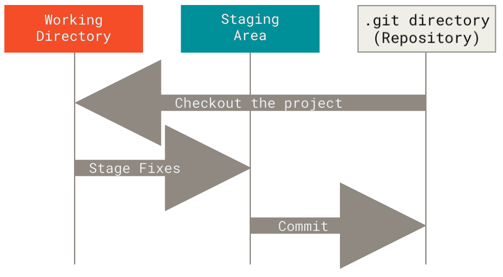
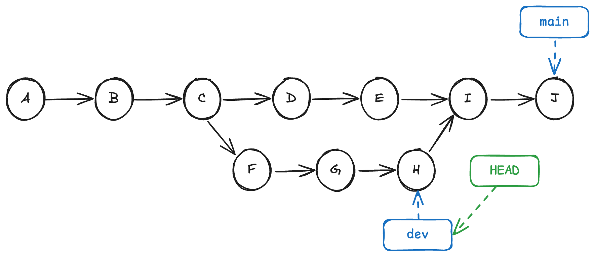
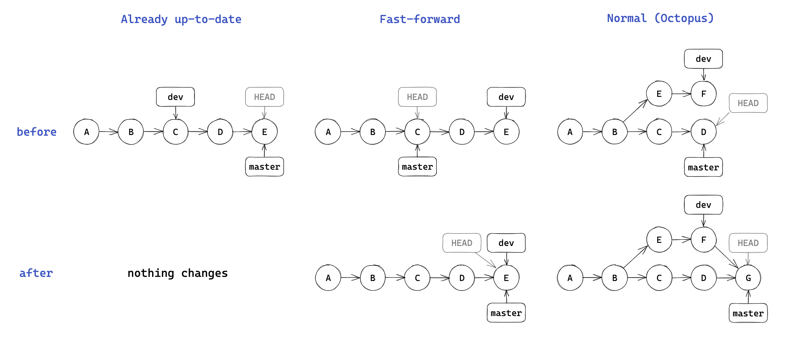
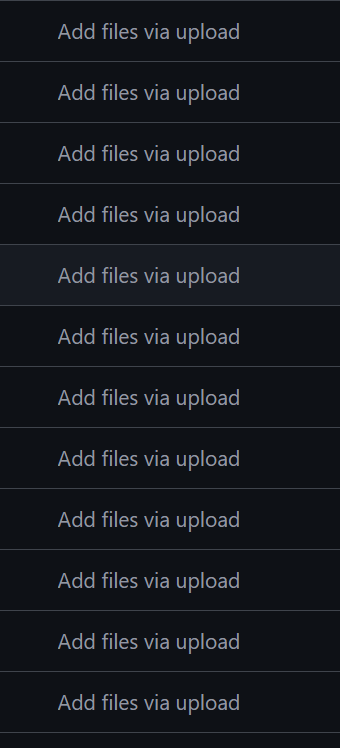
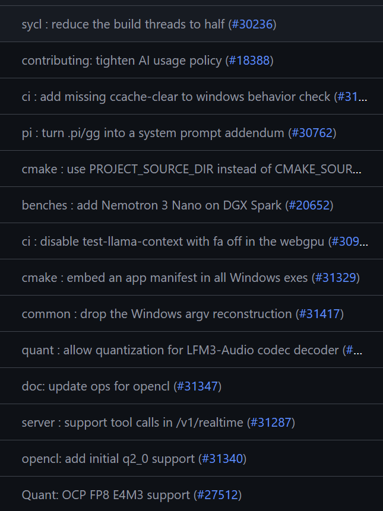

<div class="middle center cover"> <div style="width: 100%"> # Lec 1. Git 与 Github <hr/> 2026 年秋冬学期计算机学院朋辈辅学「技能拾遗」 <div class="author"> <span>@Auspiow</span> </div> 2026年10月31日 <!--s--> <div class="middle center"> <div style="width: 100%"> # Part.1 Git <!--v--> ## 高效而快速地了解[Git](https://git-scm.com/book/zh/v2/%e8%b5%b7%e6%ad%a5-%e5%85%b3%e4%ba%8e%e7%89%88%e6%9c%ac%e6%8e%a7%e5%88%b6) Git 是一种版本控制系统（Version Control Systems，VCS） 为什么需要版本控制？ 打开你的微信文件存放的地方，也许你会见到  <!--v--> ## 安装Git * Windows: 前往[官网](https://git-scm.com/install/windows)下载 * 内带 Git Bash：一个基于 MinGW 的类 Linux shell 环境 * MacOS（大概率已经有了）: ``` brew install git ``` * Linux（大概率已经有了）: ``` sudo apt update sudo apt install git ``` <!--v--> ## Git 基础配置 * 初始化一个本地 git 版本库 ``` git init ``` * 会在当前目录下创建一个名为 .git 的隐藏文件夹，这个文件夹就是 Git 的版本库（Repository） * git账号配置 * 多人合作区分用户 / 让 GitHub 能够识别出你 * 针对某一仓库专门设置：不加 --global ``` git config --global user.name "your_name" git config --global user.email "your_email" ``` * 建议配置commit签名 <!--v--> ## Git 基本模型  图源：[2023 秋冬实用技能拾遗 - TonyCrane](https://slides.tonycrane.cc/PracticalSkillsTutorial/2023-fall-ckc/lec2/#/1/3) <!--v--> ## Git 基本状态 Git 有三种状态，你的文件可能处于其中之一： 已提交（committed）、已修改（modified） 和 已暂存（staged） 这会让我们的 Git 项目拥有三个阶段：工作区、暂存区以及 Git 目录 <p></p> <!--v--> ## Add 将新创建或已修改文件的内容添加到索引中。这个“索引(index)”也被称为“暂存区(staging area)”，是用来准备下一次提交内容的地方。 无脑添加所有文件 ``` git add . ``` 交互式 ``` git add -p ``` (1/1) Stage this hunk [y,n,q,a,d,e,p,P,?]? <!--v--> ## Commit 快照（Snapshot，又称 Commit、提交） * 每一个快照都由一个十六进制数唯一标识（SHA-1） * 之后的提交会包括之前提交的 SHA-1，从而形成链式结构 <p></p> 图源：[（24 秋冬）程设辅学](https://ckc-agc.bowling233.top/programming/24fall/lec3/#git_2) <!--v--> ## Commit Message 直接commit?（Aborting commit due to empty commit message.） ``` git commit ``` 我们在提交的时候需要记录更改的原因与内容，方便定位与回溯 ``` git commit -m 'feat: I create a new feature' ``` 可选用的规范：[约定式提交](https://www.conventionalcommits.org/zh-hans/v1.0.0/) * 其还可与 [语义化版本](https://semver.org/lang/zh-CN/) 对应 ``` 1.2.2 fix: correct login error PATCH ➡ 1.2.3 feat: add search functionality MINOR ➡ 1.3.3 feat!: redesign public API MAJOR ➡ 2.0.0 ``` <!--v--> ## Branch * 创建分支 ``` git branch <BRANCH> [<COMMIT>] ``` * 查看分支 ``` git branch ``` * 切换分支（检出） ``` git checkout [-b] <BRANCH> ``` * 删除分支 ``` git branch -d <BRANCH> ``` <!--v--> ## Merge ``` git merge <BRANCH1> [<BRANCH2> ...] -m "<MESSAGE>" ``` * 如果都有新的提交，Git 会尝试自动合并，如果有冲突（Merge Conflict），需要手动解决（解决冲突后需要再次 add + commit）。 <p></p> 图源：[2023 秋冬实用技能拾遗 - TonyCrane](https://slides.tonycrane.cc/PracticalSkillsTutorial/2023-fall-ckc/lec2/#/) <!--v--> ## 回溯？！ Git 的历史一般情况下是**不可篡改**的，但实际上还是有一些方法可以对历史进行修改： git commit --amend：修改最新的提交 message。 git reset <COMMIT>：回退到某个快照。（你可能更应该使用更加温和的 git revert） git rebase -i <COMMIT>：交互式 Rebase，功能非常强大，不到万不得已不要使用！ <!--v--> ## .gitignore ~~这页slides被git忽略💀~~ 让git忽略掉某些文件 ``` __pycache__ node_modules .DS_Store ``` * `#` 开头的行是注释。 * `*` 代表通配符，匹配多个字符。例如 *.c 匹配所有 .c 结尾的文件。 * `**` 通配多个目录。例如 a/**/b 匹配 a/b、a/x/b、a/x/y/b 等。 * / 开头只匹配根目录，否则匹配任意目录。 * ! 开头是取消忽略。 <!--v--> ## 在vscode中使用git [Visual Studio Code](https://code.visualstudio.com/?_exp_home=e855cfac50) 中有 Git GUI * 小白也可以方便地使用 Git <!--s--> <div class="middle center"> <div style="width: 100%"> # Part 2. GitHub <!--v--> ## 远程版本库  图源：[2023 秋冬实用技能拾遗 - TonyCrane](https://slides.tonycrane.cc/PracticalSkillsTutorial/2023-fall-ckc/lec2/#/1/3) <!--v--> ## 远程版本库 GitHub / ZJU Git 最主要的功能是远程版本库 * Git 这样的分布式 VCS 实现中心化协作的关键 * 远程版本库通常是一个裸的 --bare * git clone / git push / git pull * 当成一个无限大网盘使用也可行 除此之外 GitHub 也有更强大的功能 * Fork, Pull Request * 社交功能：Follow, Trend, Star... 可以逛，可以刷 * GitHub 目前需要魔法上网 ~~世界最大的同性交友网站~~ <!--v--> ## Github 基础使用 Settings > Access > Emails 设置为 git 配置的邮箱 * GitHub 参照版本库中提交者的邮箱将提交者关联至其 GitHub 账号 * 建议配置 GPG 密钥对 commit 进行签名 * [delete linux because it sucks](https://github.com/torvalds/linux/tree/8bcab0346d4fcf21b97046eb44db8cf37ddd6da0) 数字签名（Digital Signature） - 非对称加密：发送者使用接收者的公钥加密，接收者使用自己的私钥解密，保证机密性。 - 数字签名：发送者使用自己的私钥签名，验证者使用发送者的公钥验证，保证消息完整性，并认证签名密钥持有者 <!--v--> ## GitHub 仓库使用 新建 repo，基本设置 添加代码 * 从头开始的空项目：init、add、commit、push * 从本地非 git 项目上传：init 后修改 remote * 远程拉取：clone、pull * 分支、合并：branch / GitHub 上操作 Release：扩展的打 tag 小组项目合作：协作者、私有 Repo 权限管理 * Pull Request、Merge、conflict 处理 <!--v--> ## GitHub 仓库使用 不希望看到的 vs 希望看到的 <div style="display: flex; gap: 20px; align-items: flex-start;"> <p></p> <p></p> </div> <!--v--> ## GitHub Pages GitHub 提供的静态网页托管 * 优点：免费，兼容多种静态站点生成器，免去环境配置，markdown支持 * 缺点：纯静态 提供免费的 username.github.io 域名  <!--v--> ## GitHub Actions GitHub 提供的 CI/CD 服务 * CI（Continuous Integration，持续集成） * CD（Continuous Delivery，持续交付） 即配置一些自动化任务，在特定事件发生时自动执行 * 例如每次 push 后自动测试，release 时自动构建部署 *本课程网站的构建也使用了 github 的 CI/CD 服务* 配置文件：.github/workflows/workflow_name.yml [Github Action 入门文档](https://www.ruanyifeng.com/blog/2019/09/getting-started-with-github-actions.html) <!--v--> ## 实践 1. 为仓库 [Auspiow/SkillsTutorial](https://github.com/Auspiow/SkillsTutorial) 点一个 Star 😋 2. 尝试在课程 Project 中使用 Git 与远程版本库进行协作 * 不要再压缩包传来传去了 😭 3. 尝试使用 GitHub Pages 构建自己的个人主页 * 如果使用 Hexo 等框架，还可使用 GitHub Actions 进行自动化部署 <!--s--> <div class="middle center cover"> <div style="width: 100%"> # 谢谢大家 <hr/> Questions? <div class="author"> <span>@Auspiow</span> </div> 2026年10月31日